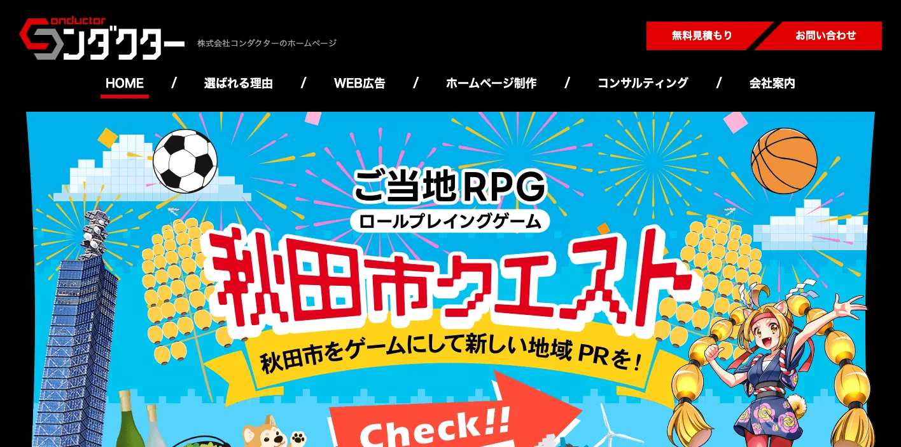
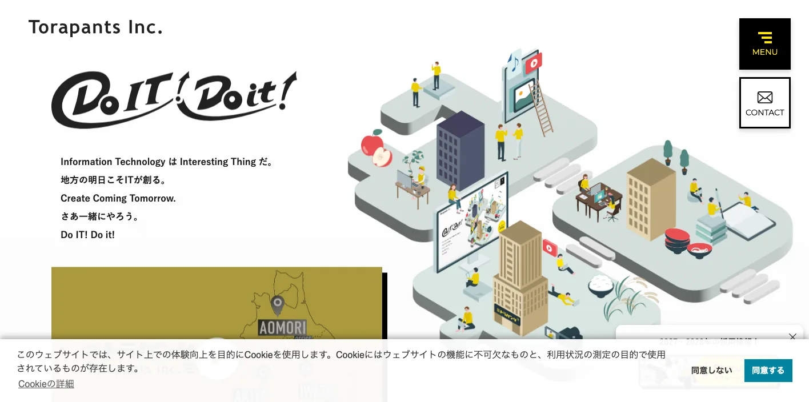
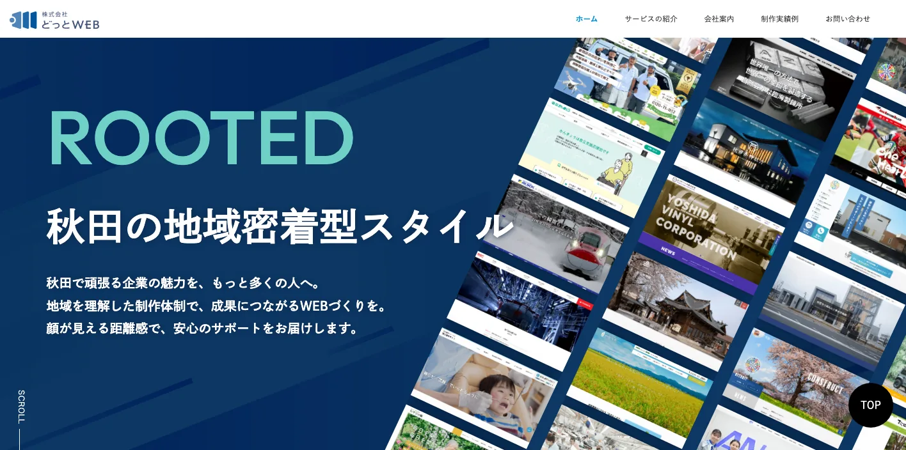
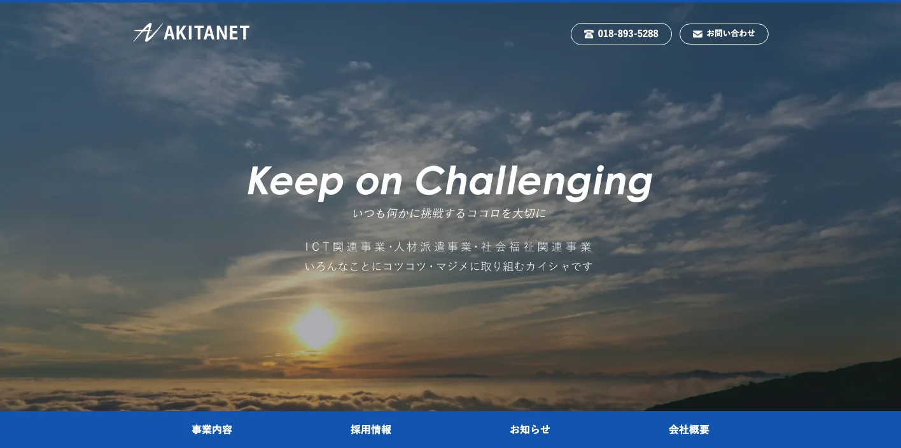
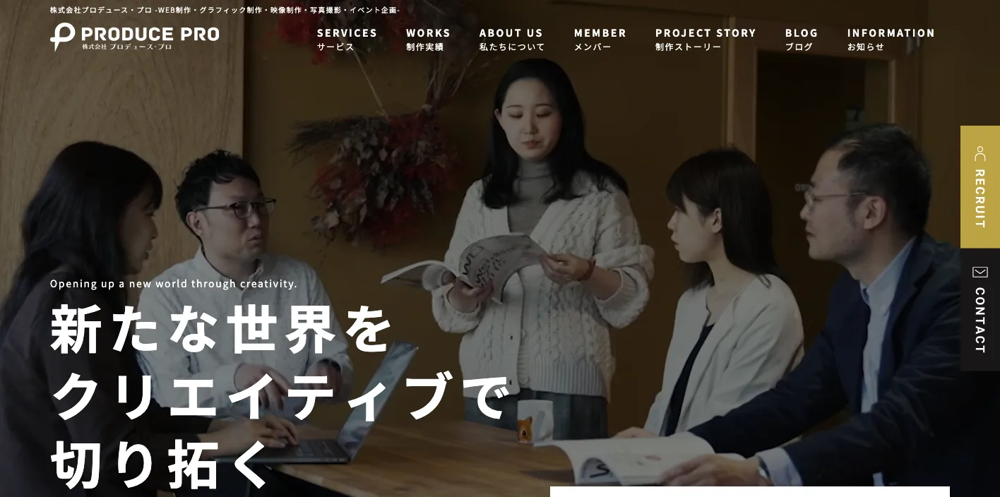
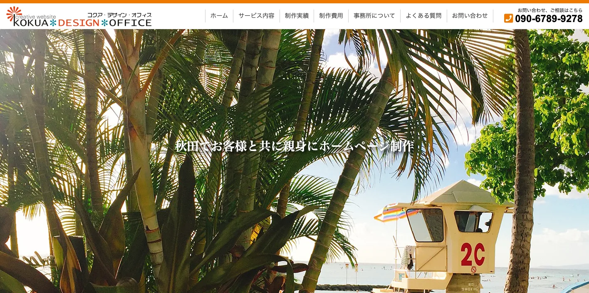
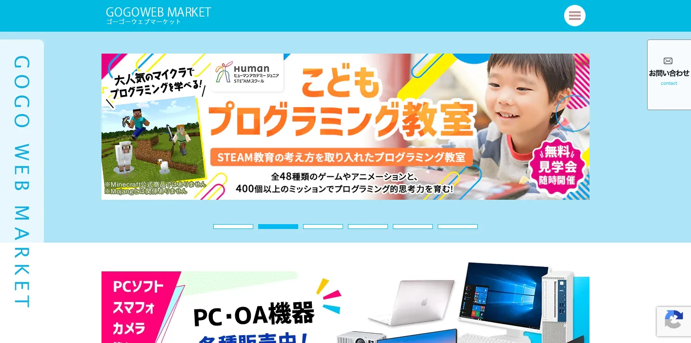
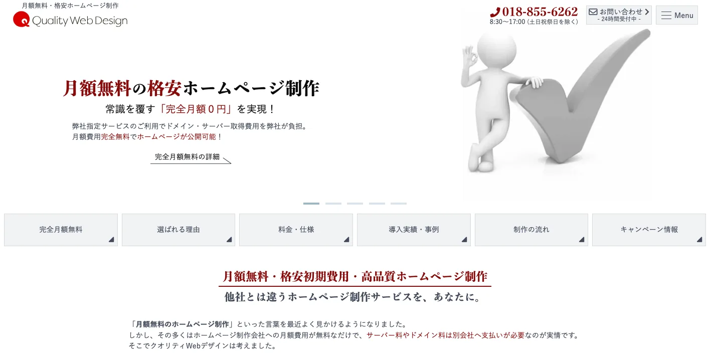
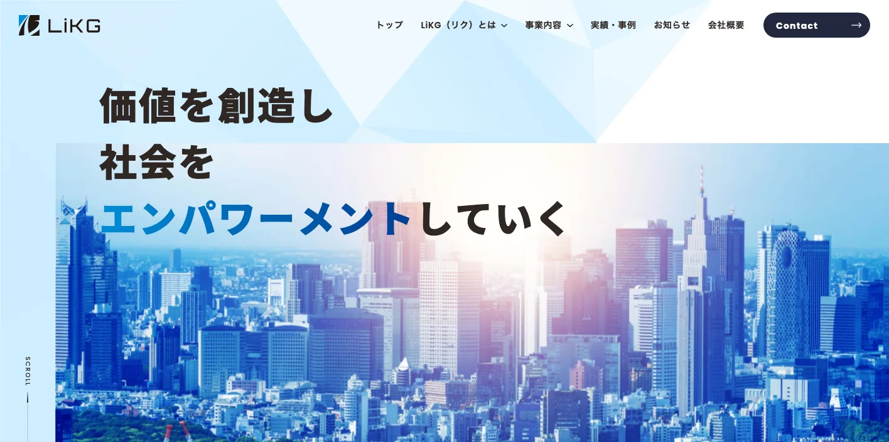

秋田県でおすすめのLLMO会社10選｜費用相場と選び方もわかりやすく解説

秋田県でLLMO会社を選ぶときは、単に「秋田市のWeb制作会社」「SEOに強い会社」だけで探すと失敗しやすいです。秋田市の都市型サービス、能代・男鹿の沿岸観光と港湾、県北の大館・鹿角、県南の横手・湯沢・大仙、仙北の観光地では、AI検索で比較される質問の形がかなり違うからです。
秋田県公式の人口月報では、2026年3月1日現在の総人口は872,106人です。令和6年秋田県観光統計第4四半期速報では、観光地点等入込客数は約3,055万人で、前年から約220万人増加しました。農林水産省の令和7年版資料では、令和5年の農業産出額は1,779億円で、米が52.7％を占める一方、野菜や畜産も拡大しています。つまり秋田県では、地域集客だけでなく、人口減少下の採用、観光の季節性、農産品・食品EC、港湾・再エネ、医療福祉まで見た情報設計が必要です。
この記事では、秋田県で比較対象にしやすいLLMO会社を10社整理し、そのあとに比較ポイント、費用相場、FAQ、まとめの順で解説します。基本から知りたい方はLLMO対策の基礎記事、東北の隣県も見たい方は宮城県の比較記事や岩手県の比較記事も参考になります。現状を先に見たい場合は無料LLMO診断から始めると判断しやすいです。
目次

秋田県でおすすめのLLMO会社10選
今回は、秋田県内に拠点があり、Web制作、SEO、Webコンサル、システム、運用支援などの公開情報を確認しやすい会社を中心に、LLMOを明示している全国対応会社も補完的に加えました。秋田県内でLLMO専業を前面に出す会社は多くありません。そのため、既存サイトの情報整理、FAQ追加、地域名ページ、EC、採用、写真や動画、運用更新まで実行できる会社を比較対象に入れています。
秋田県では、秋田市に制作会社が集まりやすい一方、能代・大館・鹿角・横手・湯沢・大仙・仙北まで、事業者の商圏は広く分かれます。観光、農産品、食品、医療福祉、建設、製造、再エネ関連では必要な情報も違います。まずは表で向いている企業を確認し、その後に各社の特徴を見てください。
| 会社名 | 拠点性 | 向いている企業 | 支援の軸 |
|---|---|---|---|
| 株式会社コンダクター | 秋田市 | Web制作とWebコンサルをまとめたい中小企業 | ホームページ制作・Webコンサル・戦略的SEO |
| 株式会社トラパンツ | 秋田市本社 | 自治体、観光、スポーツ、動画やシステムも重い企業 | Web制作・CMS・システム・映像・運用 |
| 株式会社どっとWEB | 秋田市 | 地域密着でWeb・SNS・EC・撮影まで任せたい企業 | Web制作・SEO・SNS・EC・撮影 |
| 株式会社アキタネット | 秋田市 | 自治体、公的団体、医療、教育、アクセシビリティ重視の組織 | Webサイト制作・システム開発・アクセシビリティ |
| 株式会社プロデュース・プロ | 秋田・東京 | 広告、映像、イベント、Webを一体で動かしたい企業 | Web制作・広告・映像・グラフィック・プロデュース |
| コクア・デザイン・オフィス | 秋田市 | 小規模事業、医療、農業、ECを丁寧に育てたい企業 | ホームページ制作・SEO・更新管理・Webシステム |
| 合同会社ゴーゴーウェブマーケット | 能代市 | 県北の中小企業、建設、医療、地域店舗、WordPress運用 | WordPress制作・アプリ開発・広告・SNS運用 |
| 株式会社ワンオーエス | 南秋田郡井川町 | 低予算でホームページを作り、更新しながら育てたい企業 | 格安Web制作・SEO・更新支援・レスポンシブ |
| 株式会社LiKG | 全国対応 | LLMO診断から記事制作まで任せたい企業 | LLMO診断・LLMO×SEO伴走・記事制作 |
| 株式会社ジオコード | 全国対応 | SEOとAI最適化を実装込みで進めたい企業 | SEO・コンテンツ・AIO/LLMO・実装改善 |
株式会社AIMAは秋田本社の会社ではありませんが、全国対応でLLMO支援を提供しています。月額5万円のLLMO支援は初期費用なし・1ヶ月単位で始められ、質問設計、記事制作、引用チェックに絞って実務を進められます。秋田市、県北、県南、沿岸部のように検索文脈が分かれる場合も、まず無料LLMO診断で優先順位を確認できます。
1. 株式会社コンダクター

株式会社コンダクターは、秋田市大町に拠点を置くWeb制作・Webコンサルティング会社です。公式サイトでは、ホームページ制作としてWebデザイン、コーディング、スマホ用サイト制作、ショッピングサイト制作、CMS導入、SNS構築・設計を案内しています。Webコンサルティングでは、サイト診断、アクセス解析、戦略立案、競合分析、Webマーケティング、戦略的SEOを支援領域として示しています。
秋田県内の中小企業では、Web担当者が専任でいない、サイト更新が止まっている、SEOやMEOを何から始めればよいか分からないという課題が出やすいです。コンダクターは、秋田市周辺の店舗・企業が、制作と改善を同じ窓口で進めたいときに比較しやすい会社です。
2. 株式会社トラパンツ

株式会社トラパンツは、秋田市に本社を置くWeb&Movie制作プロダクションです。公式サイトでは、Web制作についてデザイン、システム構築、サーバー構築まで一括で対応できると案内し、CMS、EC管理システム、予約システムなどの運用支援も得意領域としています。会社概要では、ホームページ企画・制作、運営管理、CMSなどのシステム設計・開発、SEO・SEM、Web広告、SNS広告、映像制作、3DCG、イベント企画など幅広い業務を掲げています。
秋田県では、観光、自治体、スポーツ、教育、地域イベントのように、文章だけでなく映像・写真・システムまで必要な案件があります。トラパンツは、秋田県内の大型サイト、観光・行政系サイト、動画やイベントも絡む情報発信に向いています。
3. 株式会社どっとWEB

株式会社どっとWEBは、秋田市土崎港西のホームページ制作会社です。公式サイトでは、中小企業のデジタル運用を支えるパートナーとして、WebサイトやLP制作、SNS構築、運用改善を支援すると案内しています。サービスには、ホームページ制作、WordPress、ライティング、写真・ドローン撮影、Webシステム開発、SEO対策、EC構築、SNS運用代行、Google Analytics設定、動画制作などが並んでいます。
秋田県のLLMOでは、地域名やサービス内容だけでなく、写真、実績、FAQ、SNS、ECまでそろえることが重要です。どっとWEBは、秋田の中小企業が、Web・SNS・写真・ECをまとめて整えたいときに向いています。
4. 株式会社アキタネット

株式会社アキタネットは、秋田市東通仲町に拠点を置く会社です。公式サイトでは、ウェブサイト制作・システム開発、クラウドサービス、人材派遣、アウトソーシングなどを案内しています。ウェブサイト制作・システム開発ページでは、自治体・公的団体・学術文教の制作実績を示し、JIS-X8341-3:2016の要求レベルを意識したアクセシビリティ対応や、自治体向けの運用支援を説明しています。
AI検索では、公共性の高い情報ほど、正確性、アクセシビリティ、更新性が重要です。アキタネットは、自治体、公的団体、医療・教育、福祉、公共性の高いサイトで、読みやすさと運用性を重視したい組織に向いています。
5. 株式会社プロデュース・プロ

株式会社プロデュース・プロは、秋田と東京を拠点にする広告代理店・制作会社です。公式サイトでは、Web制作、映像制作、グラフィックデザイン、広告代理業務、イベント企画、撮影、印刷などをサービスとして掲げています。Web制作ページでは、検索した時に選ばれるWebを制作することを使命とし、企業や店舗の魅力を伝え、売上、イメージアップ、認知度向上につながるWebを企画・制作・運用すると説明しています。
秋田県では、観光、食品、酒、地域イベント、採用のように、Web単体では伝わりにくいテーマが多くあります。プロデュース・プロは、広告、動画、写真、イベント、Webを一体で動かし、地域ブランドを伝えたい会社に向いています。
6. コクア・デザイン・オフィス

コクア・デザイン・オフィスは、秋田市下浜長浜のホームページ制作サービスです。公式サイトでは、ホームページ制作前に、目的、ターゲット、掲載内容、機能、方向性を打ち合わせ、企画から運用、検証まで対応すると案内しています。制作実績には、医療、保育園、住宅、農業、EC、JA大潟村など秋田県内の地域事業者が並んでいます。費用ページでは、企画構成費、トップページ制作、各ページ制作、LP制作、基本SEO施策などの料金例も公開しています。
LLMOでは、派手なデザインよりも、誰に何を伝えるかを整理することが先です。コクア・デザイン・オフィスは、小規模事業、医療、農業、EC、地域サービスで、目的整理から丁寧にサイトを育てたい会社に向いています。
7. 合同会社ゴーゴーウェブマーケット

合同会社ゴーゴーウェブマーケットは、能代市のホームページ制作会社です。公式サイトでは、WordPressサイト制作、アプリ開発、ネット広告管理、ソフトウェア導入、SNS運用代行などを事業として案内しています。WordPressサイト制作ページでは、管理画面からページ追加や修正ができる点、EC、予約、会員制、多言語、顧客管理など多様なニーズに対応できる点を説明し、制作費用例も公開しています。
秋田県北では、能代、山本地域、大館、鹿角など、広域の生活圏や商圏をカバーする事業者が多くあります。ゴーゴーウェブマーケットは、県北の中小企業、建設、医療、地域店舗、観光、買い物支援など、更新しながら育てるサイトに向いています。
参考：合同会社ゴーゴーウェブマーケット｜WordPressサイト制作
8. 株式会社ワンオーエス

株式会社ワンオーエスは、秋田県南秋田郡井川町の会社で、クオリティWebデザインを運営しています。公式サイトでは、月額無料・格安ホームページ制作、レスポンシブ対応、SEO対策、SNS連携、アクセス解析、Googleマップ、メールフォーム、公開後サポートなどを訴求しています。秋田県内だけでなく全国の導入実績があり、公開後も更新できるホームページ制作を重視しています。
予算が限られる小規模事業者では、最初から高額なLLMOコンサルティングを入れるより、基本情報、サービス、FAQ、実績、問い合わせ導線を先に整えるほうが現実的です。ワンオーエスは、低予算でホームページを整え、更新しながら地域検索とAI検索の土台を作りたい会社に向いています。
9. 株式会社LiKG

株式会社LiKGは、LLMOコンサルティングを明確に打ち出している全国対応会社です。公式ページでは、LLMO診断、LLMO×SEOコンサルティング、EEAT強化記事制作を案内し、AI OverviewやChatGPTにおける露出状況の調査、20項目診断、改善レポート、構造化データ改善指示、記事構成作成などを説明しています。料金も、LLMO診断10万円から、LLMO×SEOコンサルティング30万円からと公開されています。
秋田県の企業でも、すでにサイトや記事があり、AI検索にどう出ているかを診断したい場合に向いています。観光、農産品、食品、医療、採用など、一次情報を持っているのにAI検索で拾われていない会社は、診断から始める価値があります。
10. 株式会社ジオコード

株式会社ジオコードは、SEO対策、コンテンツマーケティング、オウンドメディア運用、サイト修正・実装、AIO・LLMOなどAI最適化まで案内している全国対応会社です。サービスページでは通常プラン15万円からと公開されており、SEO対策コンサルティング、サイト修正、UI/UX改善、AI最適化、コンテンツマーケティングを組み合わせられる構成です。
秋田県内でも、県外商圏を持つBtoB企業、EC企業、採用強化中の企業では、地場制作会社だけでなく全国のSEO会社も比較対象になります。ジオコードは、SEOとLLMOを分けず、分析から実装まで任せたい企業に向いています。
参考：株式会社ジオコード｜SEO対策・AIO・LLMOなどAI最適化も徹底支援
東北の他県と比較したい方は、宮城県のLLMO会社比較、岩手県のLLMO会社比較も見ると、秋田県では「人口減少下の地域情報」と「観光・農業・再エネの一次情報」をどう整えるかが重要だと分かりやすくなります。
秋田県のLLMO会社を比較する際のポイント
秋田県でLLMO会社を比較するときは、秋田市だけを見て判断しないことが重要です。秋田市は行政、医療、教育、士業、店舗、採用の検索が集まりやすい一方、能代・男鹿は港湾・観光・再エネ、大館・鹿角は観光と県北商圏、横手・湯沢・大仙は農業・食品・生活サービス、仙北は観光と宿泊の文脈が強くなります。
秋田県公式の人口月報では、2026年3月1日現在の総人口は872,106人です。令和6年の観光地点等入込客数は約3,055万人で、秋田市、男鹿市、仙北市、鹿角市、能代市など地域ごとに観光・イベントの動きが分かれています。農林水産省の資料では、米、枝豆、ねぎ、りんどう、比内地鶏、秋田すぎ、はたはたなど地域資源も多様です。LLMO会社には、こうした地域差と産業差をページ設計に落とし込む力が必要です。
秋田市中心と県北・県南・沿岸で検索意図を分けられるか
秋田県では、秋田市の検索意図と、県北・県南・沿岸部の検索意図を分ける必要があります。秋田市では店舗、医療、士業、教育、採用、行政関連の検索が多くなります。能代・男鹿は港湾、風力、観光、海産物、大館・鹿角は観光、比内地鶏、県北の生活圏、横手・湯沢・大仙は農業、食品、雪、生活サービス、仙北は角館・田沢湖・温泉を中心に考えます。
LLMO会社を比較するときは、単に「秋田対応」と書いてあるかではなく、どの地域の、どんな質問に答えるページを作るのかを言語化できるかを見ましょう。地域名を増やすだけでは弱く、対応範囲、交通、冬季対応、来店・出張可否、配送条件まで整理できる会社が向いています。
観光・宿泊は男鹿、角館、田沢湖、乳頭温泉郷、横手を分けられるか
令和6年秋田県観光統計では、観光地点等入込客数は約3,055万人、うち観光地点が約2,390万人、行祭事・イベントが約665万人でした。月別では8月が多く、竿燈まつり、花火、夏休み、帰省需要などの影響が出やすい県です。男鹿のなまはげ、角館の武家屋敷、田沢湖、乳頭温泉郷、横手のかまくら、秋田市中心部では、検索意図が大きく異なります。
観光・宿泊・飲食のLLMOでは、観光地点名だけでなく、アクセス、季節、所要時間、雪道、駐車場、周遊、子連れ可否、予約方法、外国人対応まで整理する必要があります。観光地ごとのFAQと季節導線を作れる会社を選ぶと、AIの回答に入りやすくなります。
米・枝豆・比内地鶏・日本酒・ECの一次情報を構造化できるか
秋田県は、農産品と食品の説明力が重要な県です。農林水産省の資料では、令和5年の農業産出額1,779億円のうち米が938億円、52.7％を占めます。水稲の収穫量は全国3位、りんどうの出荷量は全国2位、令和5年のえだまめ収穫量は全国6位、比内地鶏は県を代表する特産品として整理されています。
LLMOでは、商品ページに「おいしい」「こだわり」だけを書いても弱いです。品種、産地、規格、保存方法、出荷時期、精米・加工体制、配送条件、法人取引、ギフト対応、調理方法などを整理すると、AIが比較回答に使いやすくなります。農産品・食品・日本酒・ECを扱う会社は、商品情報整理まで支援できる会社を選びましょう。
秋田港・能代港・洋上風力を含む産業文脈を説明できるか
秋田県は、日本海側の港湾と再生可能エネルギーの文脈も重要です。秋田市の秋田港概要では、秋田港は県内物流の拠点であり、国際コンテナターミナルや年間処理能力10万TEUへの拡張、洋上風力発電の拠点港湾指定が説明されています。能代港も、国土交通省東北地方整備局の資料で、県北地域の物流・産業活動を支える基盤であり、洋上風力発電の設備建設・維持管理の拠点として注目されているとされています。
BtoB、建設、製造、物流、再エネ関連では、設備、対応範囲、工事・保守、港湾との距離、納入実績、資格、協力体制を明示することがAI検索で効きます。地域産業の強みを、商談前の判断材料としてページ化できる会社を比較しましょう。
医療・福祉・採用で安心材料を整えられるか
秋田県では人口減少と高齢化を前提に、医療、介護、福祉、生活サービス、採用の情報設計が重要です。AI検索では「家族に合う施設か」「遠方から相談できるか」「働く場所として安心か」のように、生活者目線の質問が増えています。
この領域では、専門性だけでなく、対象者、料金、利用の流れ、対応地域、アクセス、予約、相談方法、職種別仕事内容、研修、福利厚生、Uターン・Iターン情報まで整理する必要があります。LLMO会社には、住民や応募者の不安を先回りして、サイト内で回答できるページを作る力が必要です。
雪・広域移動・更新体制まで見積もりに入れられるか
秋田県では、冬季の移動、除雪、営業時間、配送遅延、イベント中止、季節営業など、サイトに載せるべき情報が季節で変わります。観光や医療、建設、食品配送では、この情報が古いままだと、AIにもユーザーにも誤解されます。
比較時には、制作費だけでなく、誰が、いつ、どの情報を更新するのかを確認しましょう。CMS、更新代行、写真差し替え、FAQ追加、Googleビジネスプロフィール、SNSまで含めた運用設計ができる会社のほうが、秋田県の実務には合いやすいです。
秋田県のLLMO会社に依頼する費用相場
秋田県でLLMOを外注する場合、費用は「何を任せるか」で大きく変わります。診断だけなら10万円前後から検討できますが、秋田市内の店舗サイトを少し直すのか、県北・県南まで地域別ページを作るのか、農産品ECや観光ページ、採用サイトまで整えるのかで必要な予算は違います。
大事なのは、単に安い会社を探すことではありません。秋田市単点の集客なのか、県北・県南・沿岸まで含む広域設計なのか、ECや採用や観光の一次情報まで含むのかを先に分けて見積もることです。
| 支援タイプ | 目安 | 主な内容 |
|---|---|---|
| 診断・スポット相談 | 10万円前後〜 | AI検索での出方確認、競合比較、改善優先度の整理 |
| ライトな継続支援 | 月額5万円〜15万円 | FAQ追加、少数ページ改善、記事作成、地域名ページの整備 |
| 伴走型の標準帯 | 月額15万円〜30万円前後 | 戦略設計、記事構成、内部リンク、構造化データ、定例改善 |
| 制作・EC・採用込み | 総額30万円台〜150万円超 | サイトリニューアル、EC、採用サイト、写真、商品情報、CMS |
まずは診断だけなら10万円前後から始めやすい
公開価格で分かりやすい入口は診断プランです。LiKGはLLMO診断プランを10万円から公開しています。まずAI検索で自社がどう扱われているか、競合と比べて何が足りないかを知りたい企業には使いやすい価格帯です。
秋田県では、人口が少ない地域ほど、情報不足によってAIに誤解されるリスクがあります。いきなり記事を量産するより、どの質問で出たいのか、どの地域と商品を優先するのかを先に決めるほうが無駄が少ないです。
参考：株式会社LiKG｜LLMOコンサルティング 料金プラン
小さく始めるなら月額5万円〜15万円帯が入口になる
店舗、クリニック、士業、工務店、美容、飲食、教室のように、まず少数ページを整えたい場合は月額5万円〜15万円帯が入口になります。AIMAでも月額5万円のLLMO支援を公開しており、質問設計や記事制作から小さく始めることができます。
この帯は、秋田市内の単一店舗や単一サービスなら現実的です。ただし、男鹿・角館・田沢湖・乳頭温泉郷のような観光導線、米や食品EC、採用ページまで作る案件では、追加費用を見ておく必要があります。
伴走支援の中心帯は月額15万円〜30万円前後
毎月改善を進めるなら、月額15万円〜30万円前後が一つの中心帯です。ジオコードは通常プラン15万円から、LiKGはLLMO×SEOコンサルティングを30万円から公開しています。この帯になると、戦略設計、競合調査、記事構成、ページ改善指示、構造化データ、レポート、定例打ち合わせまで含まれやすくなります。
秋田県では、都市型サービス、観光、農産品、食品、医療福祉、採用で必要なページが違います。一度作って終わりではなく、AI検索の出方を見ながら直す支援が必要な会社は、この価格帯で比較すると現実的です。
参考：株式会社ジオコード｜SEO対策・AIO・LLMOなどAI最適化も徹底支援
参考：株式会社LiKG｜LLMOコンサルティング 料金プラン
制作・EC・採用まで含めると総額30万円台〜150万円超まで広がる
既存サイトが古い、スマホで見づらい、CMSがない、採用ページが弱い、EC導線がない場合は、LLMOだけでなく制作費が必要です。秋田県では、食品、農産品、酒、工芸、観光体験、医療福祉、建設など、写真や商品説明が成果に直結する案件が多くあります。
コクア・デザイン・オフィスやゴーゴーウェブマーケット、ワンオーエスのように制作費の考え方を公開している会社もあります。価格を見るときは、AI検索以前に、ユーザーとAIが読める情報をサイト内に用意する費用が含まれているかを確認してください。
参考：合同会社ゴーゴーウェブマーケット｜WordPressサイト制作
秋田県では取材・撮影・商品情報整理で費用が上がりやすい
秋田県の案件では、現地取材や写真撮影が効きやすいです。観光では部屋、料理、雪道、アクセス、農産品・食品では加工場や商品、医療福祉では施設やスタッフ、採用では職場や働く人の雰囲気が判断材料になります。
AI検索でも、会社名、住所、サービス名、商品名、価格、実績、FAQが整理されているほうが理解されやすくなります。取材・撮影・原稿作成・更新作業が見積もりに含まれているかを必ず確認しましょう。
秋田市単点か、秋田県内広域かで予算を分ける
費用で大きく変わるのは、秋田市内だけを狙うのか、県北・県南・沿岸まで広げるのかです。秋田市内の1店舗なら、主要ページとFAQだけでも始めやすいです。一方、能代、大館、鹿角、横手、湯沢、大仙、仙北、男鹿まで含めると、地域別ページ、観光導線、商品ページ、事例、配送条件、採用情報が増えます。
迷う場合は、最初に無料LLMO診断のような小さい入口で優先順位を決め、その後に単一商圏で進めるか、県内広域で設計するかを決めるのが安全です。
秋田県のLLMO会社に関するよくある質問
ここでは、秋田県の企業や店舗がLLMO会社を検討するときに出やすい疑問を整理します。比較ポイントや費用相場とは役割を分け、依頼前に確認すべきことだけを短くまとめます。
秋田県のLLMO会社に依頼する意味はありますか？
あります。秋田県は秋田市、県北、県南、沿岸部で商圏や検索意図が変わります。観光、医療福祉、農産品、食品、再エネ、採用などの情報をAIに正しく理解される形で整える価値があります。
秋田県内の会社でないと意味はありませんか？
必ずしも県内本社である必要はありません。重要なのは、秋田市、能代、大館、横手、湯沢、男鹿、仙北などの違いや、米、比内地鶏、観光、洋上風力、医療福祉の文脈を理解して設計できるかです。
秋田市以外の会社でもLLMOは必要ですか？
必要です。県北、県南、沿岸部では商圏が広く、地元名だけでは説明が足りません。隣接市町村、交通、配送、冬季対応、観光導線、出張対応まで整理したほうが、AI検索で比較されやすくなります。
秋田県の観光・宿泊・飲食でもLLMOは効果がありますか？
あります。男鹿、角館、田沢湖、乳頭温泉郷、横手、秋田市中心部では目的や季節が違います。アクセス、所要時間、雪道、予約、周遊、子連れ可否、外国人対応FAQを整理すると、AIの比較回答に入りやすくなります。
秋田県の農業・食品・ECでもLLMOは使えますか？
使えます。米、枝豆、比内地鶏、りんご、りんどう、日本酒、加工品などは、産地、規格、保存方法、出荷時期、配送条件、法人取引条件を整理すると、購入前や仕入れ前の比較で選ばれやすくなります。
秋田県の製造業や再エネ関連企業でもLLMOは有効ですか？
有効です。設備、加工範囲、品質管理、納入実績、港湾・物流条件、洋上風力関連の対応範囲を整理すると、AIが専門性や対応範囲を理解しやすくなります。
SEO会社とLLMO会社は何が違いますか？
SEOは検索結果で見つけてもらう施策、LLMOはChatGPTやAI OverviewなどのAI回答で引用・参照されやすくする施策です。秋田県では、地域名検索とAI検索を一体で考えられる会社が向いています。
秋田県のLLMO会社に依頼したら、どれくらいで成果が出ますか？
一般的には3〜6か月が目安です。既存サイトの状態、競合、記事やFAQの量、構造化データの整備状況によって変わります。短期で断定せず、観測しながら直す進め方が現実的です。
秋田県でLLMO会社を選ぶなら、人口減少下の地域情報と一次情報から逆算しましょう
秋田県のLLMO会社選びでは、秋田市中心の集客と、県北・県南・沿岸の産業文脈を分けて考えることが重要です。秋田市の店舗や医療なら生活者の不安を解消するFAQ、観光なら季節性と移動導線、農産品・食品なら商品情報と配送条件、再エネや製造なら設備・実績・港湾との接続、採用なら働く地域と生活情報まで整理する必要があります。
まずは、自社が「秋田市内の見込み客」を狙うのか、「秋田県内の複数地域」を狙うのか、「東北・全国の商談」を狙うのかを決めてください。そのうえで、戦略だけでなく、ページ改修、記事制作、構造化データ、写真、FAQ、更新運用まで実行できる会社を選ぶと前に進めやすいです。迷う場合は、LLMO対策の基礎を確認し、必要なら無料LLMO診断やお問い合わせから、自社がどの質問で選ばれるべきかを整理していきましょう。